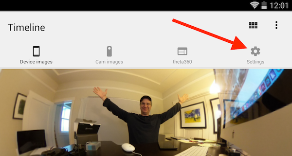

Plugin Use
In the future, your plugin can be distributed through the THETA Store, downloaded, and used by all THETA V camera end-users. They will be able to install the plugin with a computer application that Ricoh will provide.
End-users can choose your plugin with the official RICOH THETA mobile app or a custom application that you provide. For development, you can also select the active plug-in with the WiFi API.
Testing the Sample Plugin
Disconnect the camera from the USB cable. Press the physical button on the camera. There will be no sound, but the image will be captured.
The picture will be given a filename that is in numerical sequential order incrementing up from the previous picture. The format will be similar to this example filename: R0010047.JPG.
The plug-in will save the image to a file with the location and format similar to the example below.
/sdcard/DCIM/100RICOH/R0010047.JPG.
To get the file to your local computer, you can either use normal MTP as you would with a normal Android phone or you can just download the one file with adb.
Download the Picture
In order to download the picture with adb, you first need to find out the exact filename. You can use Vysor to find the filename.
Go into File Manager

Down into DCIM

Down into 100RICOH

If you have a lot of images on the camera, you may need to scroll down to the bottom of the list.

There's your filename, the newest image. In this case, it's R0010047.JPG
Then use adb pull to download the picture to your local machine
$ adb pull /sdcard/DCIM/100RICOH/R0010047.JPG
/sdcard/DCIM/100RICOH/R0010047.JPG: 1 file pulled. 21.2 MB/s (2790527 bytes in 0.126s)
Put Camera into Plugin Mode
Plugin mode can only be enabled on the RICOH THETA V.
Plugins will not work on the THETA S (older model), THETA SC or THETA m15.
Every THETA V can be put into plugin mode by first turning the THETA V on and then pressing the mode button.

After pressing the mode button for 2 seconds, release it.
The Camera status lamp will turn solid white.

Additional information on the side buttons is shown below.

Information on the front of the camera is shown below.

Use Vysor to Verify Plugin Installation
You can install multiple plugins into the THETA V. In the example below, I'm using Vysor to verify that I installed my new plugin ConstructionPlugin in addition to the PluginSample I installed earlier.

Prior to selecting with my new ConstructionPlugin with the API, I set the permissions with Vysor. Settings -> Apps -> YourAppName

Set Active Plugin
When you develop the plugin application, a companion mobile application can set the active plugin using the WiFi API of the camera. The Ricoh mobile application that most of your users will also have can set the active plugin. For testing, you can either use the Ricoh mobile app, build your own mobile app, or send a REST command using an HTTP testing tool such as curl or Postman. In the example below, I am using Restlet Client, which is a browser-based Chrome tool similar to Postman.
I am using THETA V firmware 1.20.1. This command may change in the future. Use com.theta360.yourappname for the packageName. Note that in the example below, my package is called pluginsample.
This is the POST command:
http://192.168.1.1/osc/commands/execute
{
"name": "camera._setPlugin",
"parameters": {
"packageName": "com.theta360.pluginsample",
"boot": "true",
"force": "false"
}
}
Note that the command changed in firmware 1.20.1. The command
was previously camera._setApplication and is deprecated, though it
still works in firmware 1.20.1.
Verify Active Plugin with Mobile App
Using the Ricoh mobile app, you can see and select the active plugin.
Connect your RICOH THETA mobile app to your THETA V.
Go to Settings.

On the Settings screen of your mobile app, click on Camera settings.

On your Camera settings screen you will be able to see your Plug-in. On the screen at the top of this section, my plug-in is called PluginSample.
Click on the active plug-in name to display a choice of available plug-ins.

This process is current as of version 1.17.1 of the Android application.

Show List of Plugins With API
The POST command:
$ curl -X POST 192.168.1.1/osc/commands/execute --data '{"name":"camera._listPlugins"}' -H 'content-type: application/json'
The response
{
"name":"camera._listPlugins",
"results":{
"plugins":[
{
"applicationName":"Remote Playback",
"boot":false,
"bootOptions":"",
"force":false,
"foreground":false,
"packageName":"com.theta.remoteplayback",
"running":false,
"type":"extended",
"version":"1.00.20171106144412"
},
{
"applicationName":"PluginSample",
"boot":true,
"force":false,
"foreground":false,
"packageName":"com.theta360.pluginsample",
"running":false,
"type":"extended",
"version":"1.0"
}
]
},
"state":"done"
}
Note that this command was changed from
camera._listApplications, which is now deprecated